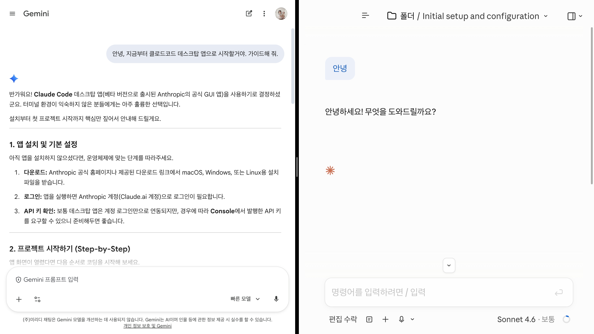

도구가 바뀌면서 일하는 방식도 바뀌고 있어요.
오늘은 그 출발점으로, Claude Code를 같이 시작해봐요.
한두 회사 얘기가 아니에요. 같이 일하는 동료들이 기대하는 기준 자체가 움직이고 있어요.
ChatGPT·Claude 등 생성형 AI 도구를 업무에 능숙하게 활용한 경험
AI 기반 디자인 워크플로우 활용 경험 (Figma AI, Midjourney 등)
AI 활용한 카피·콘텐츠 생산 효율화 경험 보유자
AI 활용 분석 자동화 경험 필수. 반복 쿼리·리포트를 LLM으로 자동화한 경험
단축키·메뉴 익히면 바로 결과물이 나와요.
일하는 방식은 그대로 둬도 돼요.
도구 사용법도 익혀야 하고, 일하는 방식 자체가 바뀌어야 해요.
그래서 초반 허들이 커요.
내 직무에 해당하는 업무가 아니어도,
효율적이라면 직접 작업할 수 있어요.
프디(프로덕트 디자이너)인 제가 바이브코딩을 하더라도, 보안·디버깅·확장성 고려까지는 현실적으로 불가해요.
그렇기에 업무의 벽이 허물어지더라도 전문성은 더 중요해질 거예요.
맥락 부여부터 운영까지,
AI가 어디에 붙어있는지,
판단이 언제 개입하는지 보세요.
아이디어 단계부터 Confluence 업로드, QA까지 AI가 끊기지 않고 연결돼요. 중간에 수동 작업이 없어요.
방향 잡기, 피드백, 최종 결정. 실행에 쓰던 시간이 판단으로 바뀌어요. 다음 슬라이드부터 하나씩 열게요.
예전엔 기획서 한 장 쓰는 데 몇 시간이었어요. 지금은 방향 잡기 30분, 초안 받고 다듬기 30분.
각 단계가 맥락을 이어받아요. 상위 기획 → 세부 설계 → 코드 → 문서로 자연스럽게 흘러가요.
히스토리·데이터·결정 배경을 한 번에. 오래 담당하며 생긴 선입견을 AI가 걷어줘요.
VOC·경쟁사·트렌드 수집은 AI 몫. 사람은 우선순위만 판단해요.
빈 문서 앞 막막한 시간이 사라져요. 베이스(Figma·레퍼런스·이미지)만 주면 Claude Code가 이어받아요.
AI가 보편적 추천을 먼저 던져 사고가 넓어져요. 프로덕트 맥락 판단은 사람 몫.
화면 디테일뿐 아니라, 예외 케이스·정책·플로우까지 같이 다듬어요.
머릿속 움직임을 코드로 시각화. 말로 설명하기 어려운 인터랙션도 바로 보여줘요.
리뷰 피드백 → 최종 스펙·정책 문서로. 흩어진 결정·예외 케이스를 한 곳에 모아요.
자연어 한 줄이면 Confluence 페이지가 만들어져요. 에이전트 여러 개 동시에 돌려 QA 루프까지.
단순작업을 AI 규칙으로. 기준만 잡아주면 같은 품질로 반복 실행돼요.
VOC·경쟁사·CSV를 파이프라인으로. 한 번 만들면 다시는 손 안 대요.
오늘 처음 설치하는 사람을 위한 가이드

웹 LLM이 못 닿는 영역 — 내 컴퓨터·파일·코드에 직접 손이 가는 작업부터 시작해 보세요.
반복하다 보면 한 번에 쓰는 토큰이 늘어나요. 작업 길이·비용·속도가 동시에 좋아지는 4가지 액션
딱 한 번만 확인하고 시작하세요
나머지 50%는 반복과 응용
반복을 줄이고, AI와 장기 협업하는 법
CLAUDE.md 파일은 매 요청마다 자동으로 읽혀요. 그래서 너무 길면 토큰이 낭비돼요.
"무슨 요청엔 어떤 파일을 봐" 하고 라우팅만 적어두어야 토큰을 효율적으로 쓸 수 있어요.
내 직무 · 협업하는 팀 · 프로젝트 목표
오늘의 대화가 내일의 자산이 되는 구조 — 주제별 파일로 분리하고, 필요할 때만 불러와요.
한 번 만들면 팀 전체가 쓸 수 있어요. 복잡한 프롬프트를 단어 하나로 압축해요.
매주 작성하는 보고서 자동 생성
파일 검토 + 이슈 리스트 자동 작성
빌드 + 배포 + 슬랙 알림 한 번에
회의록 정리 + Confluence 업로드
슬래시 커맨드가 '시작' 트리거라면, 훅은 '자동' 트리거예요.
저장·작업 완료 같은 이벤트가 발생하면 알아서 돌아가요.
Claude가 파일을 바꾸기 직전에 자동으로 백업을 만들어요.
코드 작성이 끝나면 자동으로 린트·테스트가 돌아가요.
작업이 끝나면 슬랙 알림을 자동으로 보내요.
하나의 Claude가 다 하지 않아요. 작업별 전문 Claude를 병렬로 띄워서 시간을 줄이고,
각자 독립된 맥락으로 더 정확하게 처리해요.
→ 동시 실행으로 대기 시간 단축
→ 병렬 진행으로 대기 시간 제거
입력 토큰 + 출력 토큰 = 비용. CLAUDE.md가 길수록, 서브에이전트가 많을수록 비용이 올라가요.
매주·매일 똑같이 하는 작업을 스크립트로 만들어두면 Claude Code가 혼자 실행해요. 첫 번째만 만들면 나머지는 쉬워져요.
바로 실행시키면 방향이 틀려도 되돌리기 어려워요. Plan 단계에서 방향을 먼저 잡으면 나중에 손해가 줄어요.
먼저 폴더·맥락을 파악하게 해요.
실행 전에 계획을 먼저 받아요.
계획 확인 후 실행해요.
바로 실행시키면 방향이 틀릴 때 되돌리기 어려워요. Plan 단계에서 방향 수정이 훨씬 저렴해요.
Git과 병행하면 더 안전해요. 작업 전 커밋 → 결과 확인 후 커밋.
Git = 구글 문서의 버전 히스토리. Claude가 뭔가 바꾸기 전에 커밋해두면, 실수해도 그 시점으로 돌아갈 수 있어요.
이걸 다 쓰는 사람은 많지 않아요 — 오늘 1개만 추가가 목표예요
직접 쓰면서 정리한 12가지, 4가지 카테고리
초기 1회 설정으로 이후 작업 속도가 달라지는 팁들이에요.
Claude Code를 처음 켜기 전에 이 두 가지를 먼저 세팅하면, 이후 모든 작업이 훨씬 빠르고 정확해져요.
프로젝트 개요, 주제별 참조 파일 경로, 라우팅 표. 이 세 가지만 있어도 Claude가 필요한 파일만 골라서 읽어요. 불필요한 읽기 = 토큰 낭비.
"Claude Code 잘 활용하는 방법 리서치해서 내 폴더 구조에 적용할 계획 세워" — 이 한 문장으로 시작하면 Claude가 구조를 제안해줘요.
메모리 파일은 방치하면 비대해지고, 커질수록 매 요청마다 토큰을 잡아먹으니 주기적으로 압축해야 해요.
"메모리 파일 정리해줘. 50줄 넘으면 압축하고 오래된 건 archive로." — 이 한 줄로 Claude가 처리해요.
POC 먼저, 기획서는 나중에. 실전 흐름이에요.
기획서를 먼저 쓰면 글만 보고 판단하게 돼요. POC를 먼저 만들면 사용성 검증이 자연스럽게 따라와요.
POC를 만들면서 "이 흐름이 어색하네"가 실제 화면에서 바로 보여요. 기획서 글자만 읽을 땐 못 잡는 것들이에요.
POC → 흐름 검증 → 기획서 역으로 작성. 검증된 내용이라 기획서도 훨씬 탄탄해져요.
팀 전달·UT·구현 가능성 검증을 한 번에. "Claude Code로 된다 = 실제 개발도 가능"
원하는 인터랙션 직접 만들고 → 코드에서 값 추출 → 바로 전달.
자주 쓰는 UI 패턴을 미리 저장해두면, 새 POC를 시작할 때마다 시간을 크게 아낄 수 있어요.
Chat 화면, 리스트 화면 등 자주 쓰는 UI 패턴을 HTML 파일로 만들어둬요. 새 POC는 파일 복사 → 기능만 추가. 처음부터 다시 만드는 시간이 없어요.
베이스 파일은 반드시 GitHub에 저장해두세요. 로컬만 있으면 Claude Code가 폴더 정리할 때 사라질 수 있어요.
"이거 실제 API 연결된 거죠?"의 문제가 아니에요. 더미데이터를 실제 데이터로 착각해서 그대로 구현해버리는 게 문제예요.
실제 서비스랑 구분을 못 하는 게 문제가 아니에요. 개발자의 착각이 문제예요. POC에 넣은 더미 값·샘플 텍스트를 실제 스펙으로 착각하고 그대로 구현해버리는 거예요.
POC 공유 전 반드시 "이 값·텍스트는 더미예요"를 화면과 문서 양쪽에 명시하세요. 화면 상단 "POC — 더미데이터" 배지, 더미인 필드엔 별도 표식을 달아두세요.
AI가 잘하는 영역과 못하는 영역을 가르는 법이에요.
Figma Make가 어렵거나 시간이 없을 때, SVG 첨부만으로도 Claude가 화면 구조를 정확하게 파악해요.
레이어 우클릭 → Copy as SVG → Claude에 붙여넣기. 30초면 돼요.
로딩, 에러, 빈 화면 — 이 상태들을 POC 안에서 바로 보여줄 수 있으면, 개발자와의 리뷰가 완전히 달라져요.
"이 상태에서는 이렇게 돼요"를 클릭 한 번으로 보여줄 수 있어요. 말로 설명하는 것보다 10배 빠르게 이해시켜요.
AI는 기능을 만들 수 있지만, "AI스러운 디자인"을 해결하기 위해서는 디자인 감각 있는 사람이 목줄을 잡아줘야 해요.
자연스러운 시각 보정, 호흡감, 여백의 감각이 없어요. 기능은 만들어도 "왜인지 어색함"은 못 잡아요. 그게 디자이너의 역할이에요.
토큰·시간을 절약하는 실전 노하우예요.
수정사항을 하나씩 요청하면 비효율적이고, 한꺼번에 다 던지면 누락이 생겨요.
요청을 하나씩 던지면, 코드를 그때마다 다시 읽어요. 토큰도 낭비고, 시간도 낭비예요.
10개 주고 "3단계 계획 세워서 처리해줘"라고 하면 코드 1번 읽고 3/3/4 단계로 나눠서 처리해요. 누락 없이 효율적이에요.
Claude Code와 Gemini를 상황에 맞게 나눠 쓰면, 비용을 줄이면서도 품질은 유지할 수 있어요.
전체 맥락 파악, 구조 변경, 리팩토링에 강해요.
코드를 붙여넣고 핀포인트로 고쳐요. Claude 토큰 절약 + 더 빠른 수정.
Gemini에 문제를 주고 Claude Code용 프롬프트를 만들게 해요. GitHub를 AI Studio에 연결해두면 이어서 작업할 수 있어요.
POC 코드를 로컬에만 두면 언제든 사라질 수 있어요.
Claude Code가 폴더 정리할 때 삭제될 수 있어요. 며칠 걸쳐 만든 POC가 사라지는 걸 직접 경험했어요.
POC 완성 → GitHub 푸시 → Vercel 자동 배포 → 링크 공유. 초기 설정도 Claude Code에 "설정해줘" 하면 알아서 다 해줘요.
만들고 끝이 아니라, 에이전트 여러 개를 돌려 서로 검토하게 하면 품질이 다른 수준으로 올라가요.
도구가 바뀐 게 아니에요.
같은 판단으로 낼 수 있는 결과가 달라진 거예요.
막히는 것, 새로 발견한 것, 좋았던 프롬프트 — 혼자보다 같이 쓰면 훨씬 빨라요.